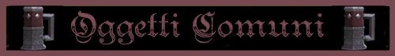

Gli oggetti magici generici possono essere suddivisi in base alla potenza dell'incantamento magico. I poteri magici, quindi possono essere suddivisi in:
|
POTENZA DELL'INCANTAMENTO |
PUNTI ESPERIENZA |
| Minor Enchantment* | da 75 a 375 punti esperienza |
| Lesser Enchantment | da 500 a 999 punti esperienza |
| Superior Enchantment | da 1000 a 1499 punti esperienza |
| Greater Enchantment | da 1500 a 2999 punti esperienza |
| Extraordinary Enchantment | da 3000 punti esperienza in poi |
* si noti che i Minor Enchantment sono incantamenti magici minori per i quali sono applicate specifiche regole non riportate nella relativa sezione (LINK).
Gli oggetti magici comuni possono essere suddivisi a loro volta in numerose sottocategorie di oggetti magici.

|
Balance of Luck |
|||||
| Superior Enchantment | |||||
| Punti Esperienza | 1.000 punti esperienza | Valore Commerciale | 10.000 monete d'oro | ||
| Natura | Divina - Balilia | Scuola di Riferimento | Summoning | ||
|
|||||
|
Bottle of Smoke |
|||||
| Lesser Enchantment | |||||
| Punti Esperienza | 500 punti esperienza | Valore Commerciale | 5.000 monete d'oro | ||
| Natura | Magica | Scuola di Riferimento | Conjuration | ||
|
|||||
|
Lantern of Positive Light |
|||||
| Greater Minor Enchantment | |||||
| Punti Esperienza | 375 punti esperienza | Valore Commerciale | 3.000 monete d'oro | ||
| Natura | Divina - Fratellanza della Luce | Scuola di Riferimento | Evocation | ||
|
|||||
|
Steelyard of Conversion |
|||||
| Lesser Enchantment | |||||
| Punti Esperienza | 700 punti esperienza | Valore Commerciale | 7.000 monete d'oro | ||
| Natura | Magica | Scuola di Riferimento | Alteration | ||
|
|||||